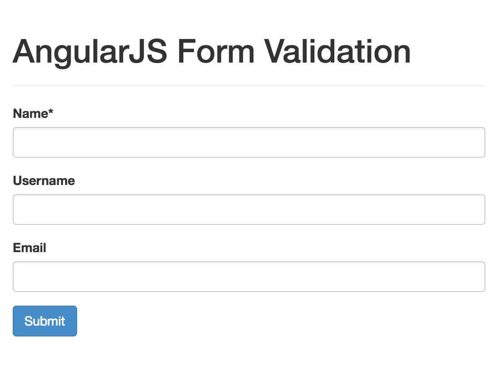
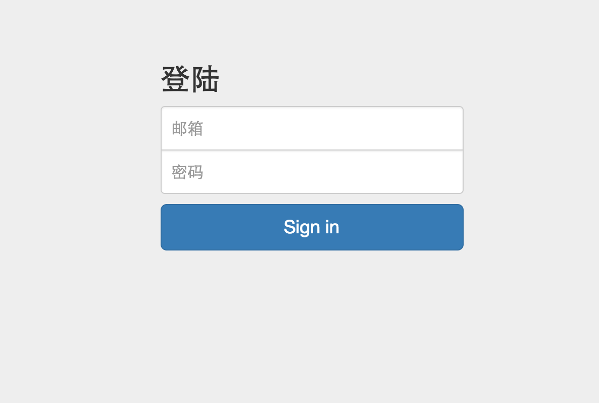

AngularJS入门
Created by Jason
控制器嵌套
<!doctype html>
<html ng-app="myApp">
<head>
<script src="/javascripts/angular.1.5.8.js"></script>
</head>
<body>
<div ng-controller="ParentController">
<div ng-controller="ChildController">
<a ng-click="sayHello()">Say hello</a>
</div>
{{ person }}
</div>
<script>
var app = angular.module('myApp', [])
app.controller('ParentController', function($scope) {
$scope.person = {
greeted: false
};
});
app.controller('ChildController', function($scope) {
$scope.sayHello = function() {
$scope.person.name = 'Ari Lerner';
};
});
</script>
</body>
</html>
控制器嵌套
- AngularJS应用的任何一部分都有父级作用域的存在
- ng-app的父级作用域是$rootScope
- 所有的作用域都通过原型继承而来（可以访问父级作用域）
- 孤立作用域除外
作用域
- 作用域是一个指向应用模型的对象，它是表达式的执行环境
- 作用域有层次结构，这个层次和相应的 DOM 几乎是一样的
- 作用域能监控表达式和传递事件
- 在 HTML 代码中，一旦一个 ng-app 指令被定义,那么一个作用域就产生了，由 ng-app 所生成的作用域比较特殊，它是一个根作用域（$rootScope）
继承作用域（Inherited Scope）
AngularJS 在创建一个作用域时，会检索上下文，如果上下文中已经存在一个作用域，那么这个新创建的作用域就会以 JavaScript 原型继承机制继承其父作用域的属性和方法
继承作用域符合 JavaScript 的原型继承机制，这意味着如果我们在子作用域中访问一个父作用域中定义的属性，JavaScript 首先在子作用域中寻找该属性，没找到再从原型链上的父作用域中寻找，如果还没找到会再往上一级原型链的父作用域寻找
继承作用域-原始类型数据继承（1）
<script type="text/javascript">
angular.module('app', [])
.controller('parentCtrl', ['$scope', function($scope) {
$scope.args = 'AngularJS';
}])
.controller('childCtrl', ['$scope', function($scope) { }]);
</script>
<body ng-app="app">
<div ng-controller="parentCtrl">
<input ng-model="args">
<div ng-controller="childCtrl">
<input ng-model="args">
</div>
</div>
</body>
继承作用域-原始类型数据继承（2）
<script type="text/javascript">
angular.module('app', [])
.controller('parentCtrl', function($scope) {
$scope.args = {};
$scope.args.content = 'AngularJS';
})
.controller('childCtrl',function($scope) { });
</script>
<body ng-app="app">
<div ng-controller="parentCtrl">
<input ng-model="args.content">
<div ng-controller="childCtrl">
<input ng-model="args.content">
</div>
</div>
</body>
作用域继承-不再访问父作用域的数据对象
<script type="text/javascript">
angular.module('app', [])
.controller('parentCtrl', function($scope) {
$scope.args = {};
$scope.args.content = 'AngularJS';
})
.controller('childCtrl',function($scope) {
$scope.args = {};
$scope.args.content = 'AngularJS';
});
</script>
<body ng-app="app">
<div ng-controller="parentCtrl">
<input ng-model="args.content">
<div ng-controller="childCtrl">
<input ng-model="args.content">
</div>
</div>
</body>
孤立作用域（Isolate Scope）
孤立作用域是 AngularJS 中一个非常特殊的作用域，它只在 directive 中出现。在对 directive 的定义中，我们添加上一个 scope:{} 属性，就为这个 directive 创建出了一个隔离作用域。
angular.module('isolate', []).directive("isolate", function () {
return {
scope : {},
};
})
表达式
- 所有表达式都在其所属的作用域内部执行
- 如果表达式发生了TypeError和ReferenceError并不抛出异常
- 不允许使用流程控制功能
- 可以接收过滤器和过滤器链
表达式Demo
<!doctype html>
<html ng-app="myApp">
<head>
<title>Parse Expression Example</title>
<script src="/javascripts/angular.1.5.8.js"></script>
</head>
<body>
<div ng-controller="MyController">
<input ng-model="expr" type="text" placeholder="Enter an expression" />
<div>{{ parsedExpr }}</div>
</div>
<script>
angular.module('myApp', [])
.controller('MyController', function($scope, $parse) {
$scope.person = {
name: "Ari Lerner"
};
$scope.$watch('expr', function(newVal, oldVal, scope) {
if (newVal !== oldVal) {
var parseFun = $parse(newVal);
scope.parsedExpr = parseFun(scope);
}
});
});
</script>
</body>
</html>
表达式--插值字符串
<!doctype html>
<html ng-app="myApp">
<head>
<title>插值字符串</title>
<script src="/javascripts/angular.1.5.8.js"></script>
</head>
<body>
<div ng-controller="myController">
<input ng-model="to" type="email" placeholder="email" />
<textarea ng-model="emailBody"></textarea>
<pre>{{previewText}}</pre>
</div>
<script>
angular.module('myApp', [])
.controller('myController', ['$scope', '$interpolate',
function($scope, $interpolate) {
$scope.$watch('emailBody', function(body) {
if (body) {
var template = $interpolate(body);
var obj = {
to: $scope.to
}
$scope.previewText = template(
obj
)
}
})
}
])
</script>
</body>
</html>
过滤器
- 过滤器用来格式化需要显示的数据
- 可以再模板绑定符号{{}}内通过|符号来调用过滤器{{ name | uppercase }}
- 在JS代码中调用过滤器
$scope.name = $filter('lowercase')('Ari'); - 模板中传递参数使用“：”
{{ 123.456789 | number:2 }}
内置过滤器
- currency
- date
- filter
- json
- limitTo
- lowercase
- orderBy
- uppercase
自定义过滤器
angular.module('myApp.filters', [])
.filter('capitalize', function() {
return function(input) {
if(input) {
return input[0].toUpperCase + input.slice(1);
}
};
});
{{ 'ginger loves dog treats' | lowercase | capitalize }}
表单验证（1）
- 必填项
- 最小长度
- 最大长度
- 模式匹配
表单验证（2）
- 电子邮件
- 数字
- URL
Form Validation Demoxx
同外界通信
$http({
method:'GET',
url:'/api/users.json'
}).success(function(data,status,headers,config){
//do something when success
}).error(function(data,status,headres,config){
//do somthing when error
});
简化请求
- $http.get(url, config)
- $http.delete(url, config)
- $http.head(url, config)
- $http.jsonp(url, config)
- $http.post(url, config)
- $http.put(url, config)
- *url:一个绝对或相对路径的URL，代表请求的目的地
- config:一个可选的设置对象
- 返回对象:HttpPromise
config参数
var blob = new BLob(['Hello World'], {type:'text/plain'});
$http({
method:'POST',//GET,DELETE,HEAD,JSONP,POST,PUT,
url:'/api/users.json',
params: {
name:'jason',
action:'search'
},
data:blob,
headers: {
},
cache:false,
timeout:30000
})
响应对象
- data:字符串或对象，这个对象代表转换后的响应体
- status:数值，响应的HTTP状态码
- headers:函数，可以接受一个参数，获取对应名字的值
- config:对象，原始请求的完整设置对象
- statusText:字符串，响应的HTTP状态文本
$http demo
<!DOCTYPE html>
<html>
<head>
<script src="/javascripts/angular.1.5.8.js"></script>
</head>
<script type="text/javascript">
angular.module('app', [])
.controller('loadDataCtrl', function($scope, $http) {
$scope.user = {
name: '',
email: ''
};
$scope.loadData = function() {
var url = 'userdata.json';
$http.get(url).success(function(data) {
$scope.user.name = data.name;
$scope.user.email = data.email;
});
}
});
</script>
<body ng-app="app">
<div ng-controller="loadDataCtrl">
<input type="button" value="Load Data From Server" ng-click="loadData();">
<p>
<label for="uname">UserName:</label>
<input type="text" id="uname" ng-model="user.name">
</p>
<p>
<label for="uemail">Email:</label>
<input type="text" id="uemail" ng-model="user.email">
</p>
</div>
</body>
</html>
Homework
Homework
- 客户端验证邮箱有效性
- 密码：密码不能为空
- 登录成功后alert显示用户名
- 使用$http异步登录
- 请求url可以用一个json文件替代